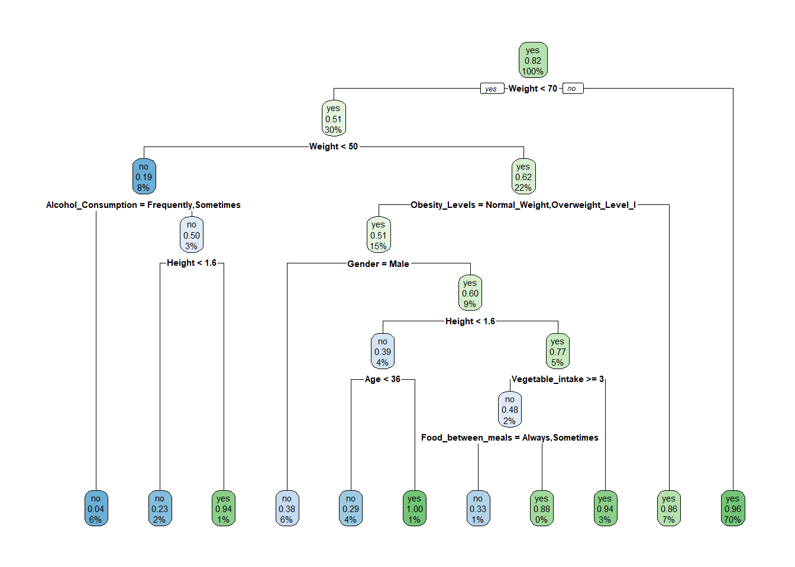

This dataset include data for the estimation of obesity levels in individuals from the countries of Mexico, Peru and Colombia, based on their eating habits and physical condition. The data contains 17 attributes and 2111 records, the records are labeled with the class variable NObesity (Obesity Level), that allows classification of the data using the values of Insufficient Weight, Normal Weight, Overweight Level I, Overweight Level II, Obesity Type I, Obesity Type II and Obesity Type III. 77% of the data was generated synthetically using the Weka tool and the SMOTE filter, 23% of the data was collected directly from users through a web platform.
Is there any significant relationship between family history with overweight(heredity) and the obesity levels of individuals?
A)The question arose from the consideration of hereditary traits influencing individual health outcomes, particularly those related to familial predispositions and parental influences. Consequently, the objective is to conduct an analysis delineating the association between familial history of overweight conditions and the corresponding levels of obesity.
Modeling and Approach:
Decision Tree: Decision trees are intuitive and easy to interpret, making them suitable for exploring relationships between categorical variables like family history with overweight and obesity levels. They can handle both categorical and numerical data, allowing to include various features from dataset in the analysis. Decision trees can reveal complex interactions and patterns in the data, helping one identify which factors are most influential in determining obesity levels based on family history.
Chi-Square Test: The chi-square test is commonly used to determine whether there is a significant association between two categorical variables. In our case, we can use the chi-square test to assess the independence between family history with overweight and obesity levels. If there is a significant association, it suggests that family history is a factor contributing to obesity levels. This test provides a statistical measure of the strength of the relationship between the variables, complementing the insights gained from the decision tree analysis.
Comprehensive Analysis: By combining both approaches, one can gain a comprehensive understanding of the relationship between family history with overweight and obesity levels. The decision tree analysis can provide insights into the hierarchical structure of the relationship and identify specific pathways leading to different obesity levels. The chi-square test offers a statistical validation of the observed relationship, enhancing the robustness of our findings.
Show the code
library(caret)
Warning: package 'caret' was built under R version 4.3.3
Loading required package: ggplot2
Warning: package 'ggplot2' was built under R version 4.3.3
Loading required package: lattice
Show the code
library(MASS)library(leaps)
Warning: package 'leaps' was built under R version 4.3.3
Show the code
library(ggplot2)library(GGally)
Warning: package 'GGally' was built under R version 4.3.3
Registered S3 method overwritten by 'GGally':
method from
+.gg ggplot2
Show the code
library(psych)
Warning: package 'psych' was built under R version 4.3.3
Attaching package: 'psych'
The following objects are masked from 'package:ggplot2':
%+%, alpha
Show the code
library(car)
Warning: package 'car' was built under R version 4.3.3
Loading required package: carData
Warning: package 'carData' was built under R version 4.3.3
Attaching package: 'car'
The following object is masked from 'package:psych':
logit
Show the code
library(tidyr)library(gridExtra)
Warning: package 'gridExtra' was built under R version 4.3.3
Show the code
library(rpart)
Warning: package 'rpart' was built under R version 4.3.3
Show the code
library(tree)
Warning: package 'tree' was built under R version 4.3.3
Show the code
library(rpart.plot)
Warning: package 'rpart.plot' was built under R version 4.3.3
Show the code
library(caret)library(plotly)
Attaching package: 'plotly'
The following object is masked from 'package:MASS':
select
The following object is masked from 'package:ggplot2':
last_plot
The following object is masked from 'package:stats':
filter
The following object is masked from 'package:graphics':
layout
Show the code
library(vcd)
Warning: package 'vcd' was built under R version 4.3.3
1. Handling of Categorical Variables Intuitive Handling: Decision trees inherently handle categorical variables very well. They can split nodes on such variables to assess their impact on outcomes (in this case, obesity levels). This means that family history, a categorical variable, can be directly used to split the data, providing clear insights into how it correlates with different categories of obesity. Direct Visualization: Each branch of the tree can be traced back to a decision based on family history, making it visually intuitive to see how significant family history is in predicting obesity levels.
2. Capability to Model Non-linear Relationships Flexibility in Modeling: Decision trees do not assume linearity in the data, which is ideal for complex relationships that may exist between hereditary factors and obesity levels. They can model complex hierarchical relationships that other linear models might fail to capture. Interaction Effects: Decision trees can naturally model interactions between multiple variables without the need for explicit specification. This allows for the exploration of how family history interacts with other factors like diet, exercise, and age in influencing obesity.
In summary, using a decision tree to study the impact of family history on obesity levels leverages the model’s ability to handle categorical data, model complex relationships, and provide interpretable results that are crucial for both understanding and acting on the data’s insights.
The utilization of the sample() function is employed in a random manner for the purpose of selecting indices designated for the training set. The proportion of the training set is established at 80% of the overall data. Subsequently, the training and testing sets are generated by utilizing the aforementioned selected indices.
The rpart() function is implemented to construct a regression tree model that is fitted to the training data. The formulation family_history_with_overweight ~ . delineates that the variable denoted as “family_history with_overweight” functions as the response variable, with all other variables within the dataset serving as predictors. To visually represent the fitted regression tree model, the rpart.plot() function is utilized.
Show the code
model <-rpart(family_history_with_overweight ~ ., data = train_data)rpart.plot(model)

Interpretation of Decision Tree:
This decision tree is focusing on the relationships between various physical measurements and lifestyle choices (like alcohol consumption and dietary habits) to assess obesity and other related conditions, with (“family_history_with_overweight” as main variable) The nodes show the probability of an individual falling into certain categories based on their characteristics, with deeper branches offering more specific conclusions based on additional factors.
Pearson’s chi-squared test :
This test is a statistical test applied to sets of categorical data to evaluate how likely it is that any observed difference between the sets arose by chance. It is the most widely used of many chi-squared tests (e.g., Yates, likelihood ratio, portmanteau test in time series, etc.) – statistical procedures whose results are evaluated by reference to the chi-squared distribution.
The chi-squared test can then be used to statistically confirm this relationship by testing the independence between these two categorical variables across the entire dataset.
The chi-squared test quantitatively confirms whether this influence is statistically significant, providing a robustness check to the observational patterns noted in the decision tree.
Show the code
obesity$family_history_with_overweight <-as.factor(obesity$family_history_with_overweight)obesity$Obesity_Levels <-as.factor(obesity$Obesity_Levels)# Create a contingency tablecontingency_table <-table(obesity$family_history_with_overweight, obesity$Obesity_Levels)# Perform chi-square testchi_sq_test <-chisq.test(contingency_table)# Print the resultsprint(chi_sq_test)
The result of Pearson’s chi-squared test indicates a highly significant association between the variables family_history_with_overweight and NObeyesdad i.e Obesity levels. Here’s the interpretation:
X-squared: This is the test statistic of the chi-squared test. In this case, it is 621.98.
df (degrees of freedom): This represents the degrees of freedom associated with the chi-squared distribution. It is calculated as (number of rows - 1) * (number of columns - 1). In this case, df = 6.
p-value: This is the probability of observing a test statistic as extreme as the one calculated from the sample data, under the assumption that the null hypothesis is true. A p-value below a certain significance level (commonly 0.05) indicates that the association between the variables is statistically significant.
In this result: - The p-value is less than 2.2e-16, which is essentially zero. This indicates strong evidence against the null hypothesis. - Therefore, we reject the null hypothesis and conclude that there is a significant association between family_history_with_overweight and NObeyesdad.
In simpler terms, it suggests that there is a relationship between family history of overweight and the obesity status categories in the dataset.
The result of Pearson’s chi-squared test indicates a very strong association between the variables family_history_with_overweight and NObeyesdad i.e obesity levels. This means that there is a significant relationship between having a family history of overweight and the obesity status categories in the dataset.
Now that it is clearly evident that there’s a strong relationship between two variables. lets look at the details.
Show the code
library(dplyr)
Attaching package: 'dplyr'
The following object is masked from 'package:gridExtra':
combine
The following object is masked from 'package:car':
recode
The following object is masked from 'package:MASS':
select
The following objects are masked from 'package:stats':
filter, lag
The following objects are masked from 'package:base':
intersect, setdiff, setequal, union
Show the code
obesity_distribution <- obesity %>%group_by(family_history_with_overweight, Obesity_Levels) %>%summarise(count = dplyr::n(), .groups ='drop')# View the table to ensure correctnessprint(obesity_distribution)
# A tibble: 13 × 3
family_history_with_overweight Obesity_Levels count
<fct> <fct> <int>
1 no Insufficient_Weight 144
2 no Normal_Weight 127
3 no Obesity_Type_I 7
4 no Obesity_Type_II 1
5 no Overweight_Level_I 78
6 no Overweight_Level_II 16
7 yes Insufficient_Weight 124
8 yes Normal_Weight 145
9 yes Obesity_Type_I 332
10 yes Obesity_Type_II 295
11 yes Obesity_Type_III 324
12 yes Overweight_Level_I 204
13 yes Overweight_Level_II 261
Show the code
library(plotly)# Plotting with Plotly Expressplot_ly(data = obesity_distribution, x =~Obesity_Levels, y =~count, color =~family_history_with_overweight,type ="bar", barmode ="group") %>%layout(title ="Distribution of Obesity Levels by Family History of Overweight",xaxis =list(title ="Obesity Levels"),yaxis =list(title ="Count"),legend =list(title ="Family History: Overweight")) %>%layout(legend =list(orientation ="h", x =0.5, y =-0.15)) %>%layout(font =list(size =11, family ="Arial")) # Adjust font size and family
Warning in RColorBrewer::brewer.pal(N, "Set2"): minimal value for n is 3, returning requested palette with 3 different levels
Warning in RColorBrewer::brewer.pal(N, "Set2"): minimal value for n is 3, returning requested palette with 3 different levels
The graphical representation in the form of a bar plot illustrates the distribution of obesity levels across different categories, with obesity types and overweight levels delineated on the x-axis and corresponding counts depicted on the y-axis. A discernible trend emerges wherein obesity types 1, 2, and 3, alongside the overweight categories, exhibit notably higher frequencies. This pattern strongly suggests a substantive association between family history with overweight and the observed obesity levels. Consequently, it is substantiated that familial predispositions towards overweight conditions significantly contribute to the prevailing obesity levels among individuals.